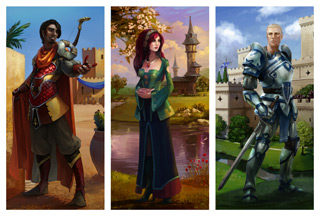
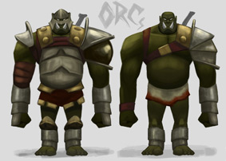

<?xml version="1.0" encoding="ISO-8859-1" ?>
<rss version="2.0" xmlns:media="http://search.yahoo.com/mrss/">
<channel>
<title>RuneScape Developers' Blogs [Tag: development]</title>
<link>http://services/m=devblog/?tag_id=3</link>
<description>
Welcome to the Developer Blogs. This section of the website contains articles delving behind the scenes here at Jagex. Each article will showcase a particular project related to RuneScape or the people whose work you don't get to see. Every one of them works hard towards making RuneScape the best it possibly can be, and to make Jagex a great place to work.
</description>
<image><link>http://services/m=devblog/</link><title>RuneScape Developer Blogs</title><url>http://site/img/devblog/feed_logo.png</url></image>
<language>en</language>
<item>
<title>Signature Heroes: Who are the Signature Heroes?</title>
<link>http://services/m=devblog/view_post.ws?post_id=95</link>
<description><![CDATA[               
Mod John A introduces the new RuneScape Signature Heroes.
]]></description>
<author>Mod John A</author>
<pubDate>Tue, 29 Jun 2010 15:06:56 BST</pubDate>
<category>design</category>
<category>development</category>
<category>Signature Heroes</category>
</item>
<item>
<title>Dungeoneering: Beyond the Release</title>
<link>http://services/m=devblog/view_post.ws?post_id=97</link>
<description><![CDATA[               
Since the release of Dungeoneering, the developers - Mods Chris L, Trick and Liono - have been hard at work not only on 'batch 2' (more rooms, more floors, more bosses), but also on a number of other improvements...
]]></description>
<author>Mod Liono</author>
<pubDate>Fri, 28 May 2010 15:22:46 BST</pubDate>
<category>construction</category>
<category>development</category>
<category>dungeon</category>
<category>farming</category>
<category>herblore</category>
<category>skill</category>
</item>
<item>
<title>Love Story: Return of the Wise Old Man</title>
<link>http://services/m=devblog/view_post.ws?post_id=94</link>
<description><![CDATA[               
Mod Ash brushes the dust off the Wise Old Man of Draynor Village and brings him out of retirement for one more adventure.
]]></description>
<author>Mod Ash</author>
<pubDate>Wed, 12 May 2010 16:05:46 BST</pubDate>
<category>development</category>
<category>quest</category>
</item>
<item>
<title>Voice Overs: Look Who's Talking</title>
<link>http://services/m=devblog/view_post.ws?post_id=93</link>
<description><![CDATA[       The Audio team's Mod Ian and Mod Adam R give an insight into the voice overs that were recently added to the tutorial.
]]></description>
<author>Mod Adam R</author>
<pubDate>Thu, 29 Apr 2010 15:27:06 BST</pubDate>
<category>audio</category>
<category>development</category>
<category>voice</category>
</item>
<item>
<title>The Void Knights Series: Into the Void</title>
<link>http://services/m=devblog/view_post.ws?post_id=91</link>
<description><![CDATA[               
From tiny acorns, mighty oaks grow... So discovered Mod Moltare with his concept for some knight-based questing.
]]></description>
<author>Mod Moltare</author>
<pubDate>Thu, 22 Apr 2010 11:36:30 BST</pubDate>
<category>activity</category>
<category>development</category>
<category>knights</category>
<category>quest</category>
</item>
<item>
<title>Halloween 2010: Quoth Mod Raven</title>
<link>http://services/m=devblog/view_post.ws?post_id=86</link>
<description><![CDATA[       Mod Raven has recently moved jobs at Jagex, from Community Management over to the RuneScape Content, and he's got his first project...
]]></description>
<author>Mod Raven</author>
<pubDate>Thu, 25 Mar 2010 16:40:51 GMT</pubDate>
<category>design</category>
<category>development</category>
<category>event</category>
<category>halloween</category>
<category>holiday</category>
</item>
<item>
<title>Shattered Heart: A History of Non-violence</title>
<link>http://services/m=devblog/view_post.ws?post_id=82</link>
<description><![CDATA[       Mod Maz is working on a few projects at the moment, one of which is aimed at players who enjoy training all non-combat skills...
]]></description>
<author>Mod Maz</author>
<pubDate>Fri, 12 Feb 2010 11:05:35 GMT</pubDate>
<category>development</category>
<category>skill</category>
</item>
<item>
<title>Holiday Event: A Christmas Warble</title>
<link>http://services/m=devblog/view_post.ws?post_id=75</link>
<description><![CDATA[               
Mod Edam talks a little about this year's upcoming Christmas holiday event, from the perspective of a new developer.
]]></description>
<author>Mod Edam</author>
<pubDate>Fri, 11 Dec 2009 13:39:24 GMT</pubDate>
<category>christmas</category>
<category>development</category>
<category>holiday</category>
</item>
<item>
<title>Fairy Tale III: Subtitle Yet to Be Approved</title>
<link>http://services/m=devblog/view_post.ws?post_id=42</link>
<description><![CDATA[               
Brutal orkish violence and diabolical Godfather madness will once again rage rampant in RuneScape! Mod Tytn talks about the concluding part of the fairy quest trilogy.
]]></description>
<author>Mod Tytn</author>
<pubDate>Thu, 26 Nov 2009 14:56:16 GMT</pubDate>
<category>development</category>
<category>fairy</category>
<category>ork</category>
<category>quest</category>
<category>zanaris</category>
</item>
<item>
<title>Achievement Diary: Elite Tasks</title>
<link>http://services/m=devblog/view_post.ws?post_id=41</link>
<description><![CDATA[               
Mod Maz, aka the Queen of the Squirrels, has been tasked with the, er, task of developing elite, um, tasks for all existing Achievement Diaries...
]]></description>
<author>Mod Maz</author>
<pubDate>Thu, 19 Nov 2009 14:50:45 GMT</pubDate>
<category>achievement</category>
<category>development</category>
<category>diary</category>
<category>elite</category>
</item>
</channel>
</rss>
